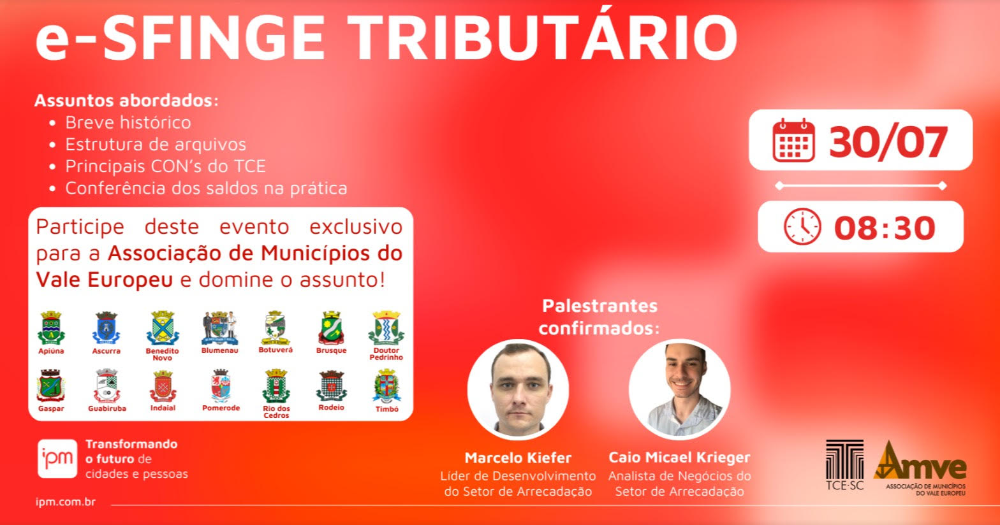

Atualmente tenho 20 anos de idade, sou residente e natural de Rio do Sul - SC e trabalho na empresa IPM Sistemas
Estou trabalhando na área como Analista de Regra de Negócios , onde o foco principal é a Prestação de Contas dos Municípios para o Tribunal de Contas do Estado.
Já ministrei uma palestra sobre o e-Sfinge (sistema de fiscalização do Tribunal de Contas de Santa Catarina) para a AMVE (Associação dos Municípios do Vale Europeu) onde havia presente 14 Municípios e seus respectivos gestores.
Desenvolvi um algoritmo em Pascal que simula a fila de um restaurante bem como outras questoes gerenciais. Exemplo de código:
//Procedimento da lista de mesas
procedure removeMesaLista (var listaMesasOcupadas:reg_lista ; var cadastroMesas:vetMesas ; var fila_vip:reg_fila_tipo ; var fila_pref:reg_fila_tipo ; var fila_outros:reg_fila_tipo);
var i, posicaoExclude:integer;
begin
writeln('Digite a mesa que deseja liberar');
readln(listaMesasOcupadas.elemento);
posicaoExclude := posicaoMesaRetirar(listaMesasOcupadas);
if posicaoExclude = 5 then
begin
dec(listaMesasOcupadas.posicaoLista);
setaMesaDisponivel(cadastroMesas,listaMesasOcupadas.elemento);
end
else
begin
for i:= posicaoExclude to listaMesasOcupadas.maxLista-1 do
listaMesasOcupadas.mesasOcupadas[i] := listaMesasOcupadas.mesasOcupadas[i+1];
setaMesaDisponivel(cadastroMesas,listaMesasOcupadas.elemento);
dec(listaMesasOcupadas.posicaoLista);
end;
insereClienteFilaPorTipo(cadastroMesas,fila_vip,fila_pref,fila_outros,listaMesasOcupadas);
clearScreen();
end;
procedure insereMesaLista (var listaMesasOcupadas:reg_lista ; var cadastroMesas:vetMesas ; var fila_clientes:vet_cliente);
var i:integer;
begin
listaMesasOcupadas.mesasOcupadas[listaMesasOcupadas.posicaoLista] := listaMesasOcupadas.elemento;
setaMesaOcupada(cadastroMesas,listaMesasOcupadas.elemento);
inc(listaMesasOcupadas.posicaoLista);
end;